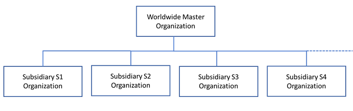
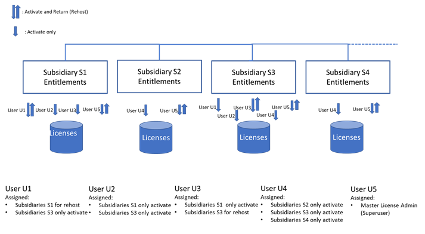

Controlled re-hosting for FNE
It is possible to restrict the ability to return licenses to assigned users only - Controlled Re-hosting. This reduces the chance that licenses are removed accidentally, which could upset running production systems.
About this task
Using FNE licensing technology, you can perform license re-hosting and move licenses between FNE license servers.
License re-hosting consists of two tasks:
- Removal of the license from a license server and returning it back to its entitlement in the Advantest licensing web portal.
- Re-activation of the returned license onto another license server.

Activating controlled re-hosting for your worldwide Master Organization in the Advantest entitlement management system, initially disables all assigned users at your subsidiary organizations from license re-hosting (returning licenses to its entitlement).
- Administrator
- License re-hosting privileges for all worldwide subsidiaries and any subsidiaries added in the future.
- Authorized users
- Authorized for license re-hosting for specified subsidiary organizations.
- Users
- Assigned to a specific subsidiary and can activate licenses only onto the license servers registered for the same subsidiary organization.
Users can be designated to perform license re-hosting for FNE servers and entitlements by enabling the functionality for specified subsidiary organizations.
To enable Controlled Re-hosting, it must be explicitly requested from Advantest as follows:
Before you begin
Plan the internal organization required to manage your Advantest licenses: the people, their locations and their responsibilities.
Procedure
- Request the activation of the worldwide Master Organization ID for controlled re-hosting.
- Specify the login names of license administrators, who are authorized to perform license re-hosting from and to any server inside your worldwide Master Organization.
- Specify the login names of users with a list of subsidiary organization IDs, for which the users are authorized to perform re-hosting.
Results
Controlled re-hosting privilege requirements have been sent to Advantest for configuration.
Example
Illustration of how the various license roles can be assigned

- Mixed authorized user/user role
- User U1 is assigned Subsidiary S1 and Subsidiary S3, For Subsidiary S1, the license administrator (re-host/return) role is assigned. For Subsidiary S3, only the regular activate role is assigned.
- User role only for multiple subsidiaries
- User U2 is assigned Subsidiary S1 and Subsidiary S3 but only the regular activate role is assigned for both subsidiaries.
- Administrator role for complete re-hosting privileges
- User U5 has re-hosting rights for all subsidiaries.
What to do next
Contact your Advantest representative for further information and to get the Controlled Re-hosting functionality activated.